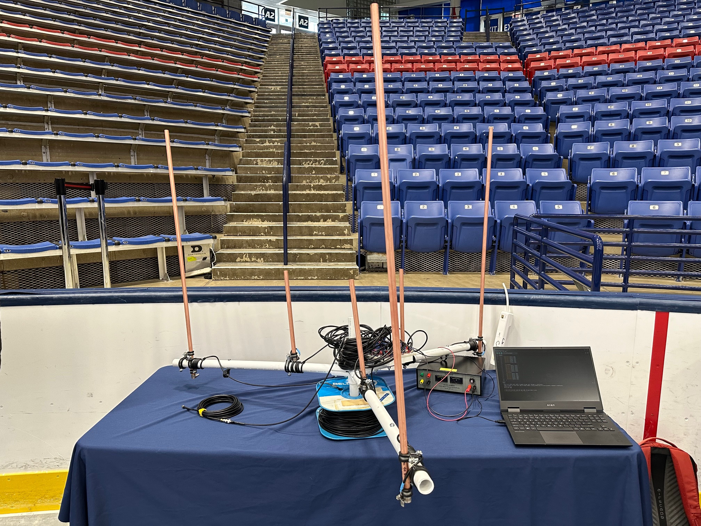
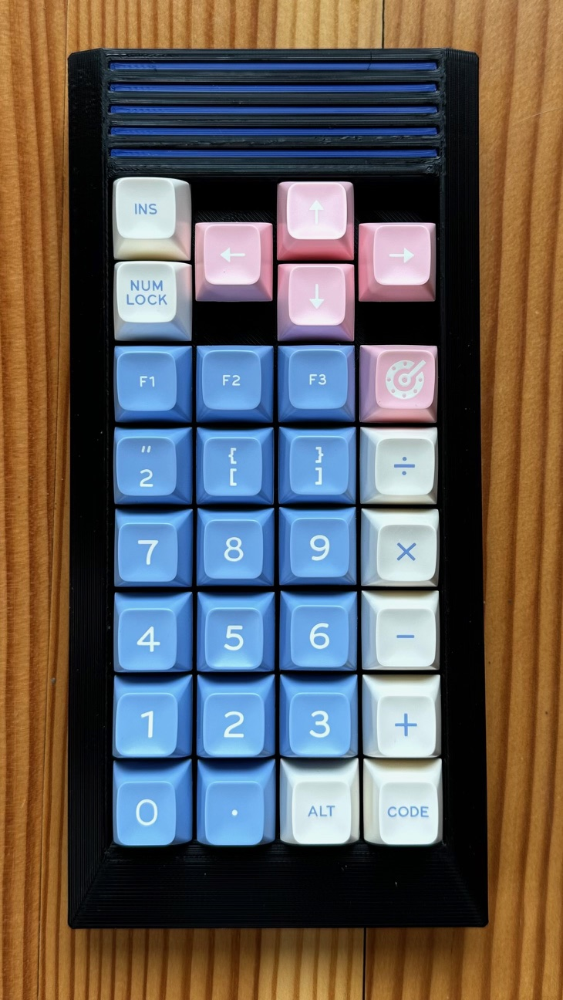

Heya! I am an American engineering student with an interest in radio and antenna systems! I also enjoy building mechanical keyboards in my spare time, and I love existing outside in nature.
Electrical engineering master's student
Mechanical keyboard enthusiast
Amateur radio hobbyist (building antennas is so much fun)
MATLAB, SolidWorks, Cura
3D printing, soldering
Power over ethernet (802.3at, 802.3bt)
Senior Project
Designed and built a phased array antenna system for duplex communication with amateur radio, gaining hands-on experience with antenna theory and RF systems
Review paper discussing the complex effects of atmospheric conditions on 5G mmWave performance
Raspberry Pi Pico 30-key number pad with QMK firmware, ARTSEYIO compatibility, custom 3D printed case, and hand-wired mechanical switches
- Handwired dactyl manuform keyboard with yejianfengblue's dactyl generator
- Simple handwired 2x4 key mechanical keyboard for testing of the ARTSEY.IO layout
- Custom QMK firmware for the keyboard builds listed above